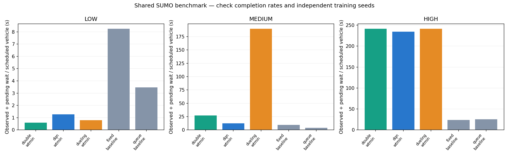

Pilot results validate execution only. One training seed does not establish algorithm superiority.
Wait = (observed stopped vehicle-seconds + pending vehicle-seconds) / scheduled vehicles. Completion must be read alongside wait.

| Test load | Controller | Reward | Train load | Models | Wait (s) | Completion | Mean queue |
|---|---|---|---|---|---|---|---|
| high | double | wtmin | high | 1 | 241.56 | 0.483 | 84.41 |
| high | dqn | wtmin | high | 1 | 234.57 | 0.493 | 82.92 |
| high | dueling | wtmin | high | 1 | 241.56 | 0.483 | 84.41 |
| high | fixed | baseline | baseline | 1 | 23.82 | 0.99 | 15.32 |
| high | queue | baseline | baseline | 1 | 25.62 | 0.929 | 16.21 |
| low | double | wtmin | low | 1 | 0.6 | 1.0 | 0.06 |
| low | dqn | wtmin | low | 1 | 1.27 | 1.0 | 0.13 |
| low | dueling | wtmin | low | 1 | 0.8 | 1.0 | 0.08 |
| low | fixed | baseline | baseline | 1 | 8.25 | 1.0 | 0.83 |
| low | queue | baseline | baseline | 1 | 3.46 | 1.0 | 0.35 |
| medium | double | wtmin | medium | 1 | 27.12 | 0.938 | 9.0 |
| medium | dqn | wtmin | medium | 1 | 12.3 | 0.991 | 4.08 |
| medium | dueling | wtmin | medium | 1 | 189.7 | 0.55 | 58.46 |
| medium | fixed | baseline | baseline | 1 | 9.57 | 1.0 | 3.17 |
| medium | queue | baseline | baseline | 1 | 4.13 | 1.0 | 1.37 |